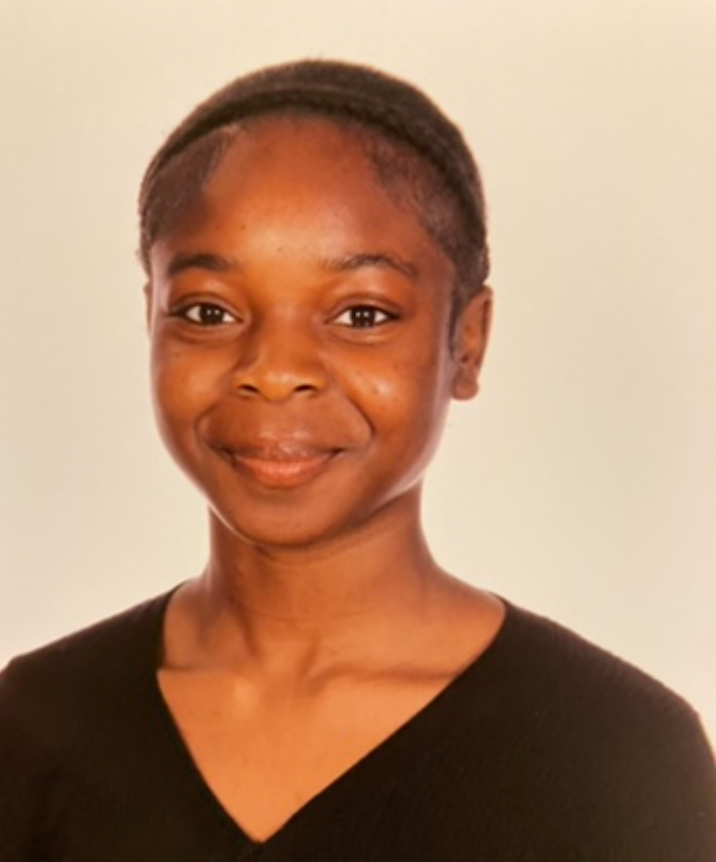

Mabel Bamigbade's resume

Summary
Motivated and ambitious A-level graduate undertaking a gap year to kickstart and pursue a career in software engineering. Currently working on projects to develop hard skills and obtain experience and is open to work under apprenticeship programmes level 4 and above.
Education
Alevels
- Mathematics
- Phyics
- History
Udemy
- Full-stack web development course (ongoing)
Work experience
- Intern at Igus UK- Collaborating with various departments in Igus to learn aout their functions in the work place setting and their ultimate conrtibution to the engineering industry.
- Participant of Uncover Engieering- Working across various workshops to gain an understanding and practical skills amongst the array of engineering ther is to offer.
- Student under Udemy- Learning HTML, CSS and JavaScript to build fully functional, creative and informational websites as projects and potentional future customers.
Skills
Intermediate HTML
Elementary CSS
Troubleshooting
Problem-solving
Communication
Analysis
Contact me